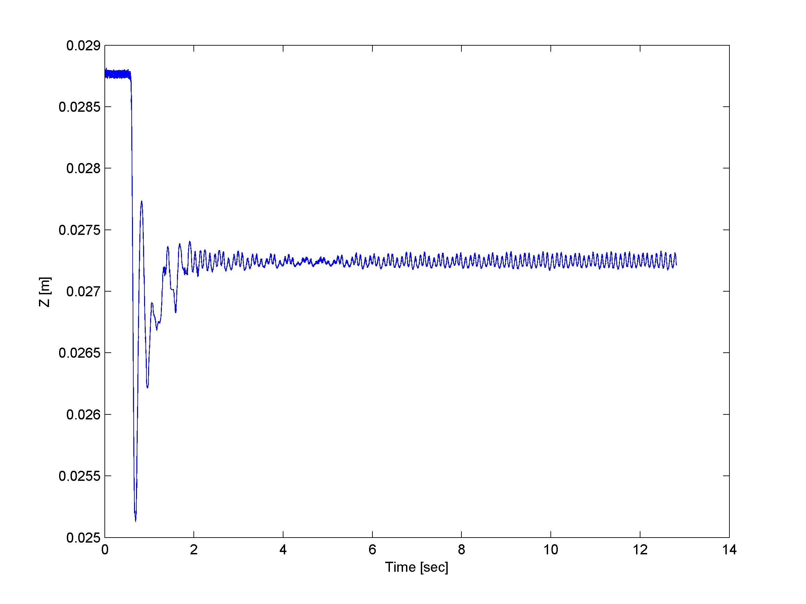
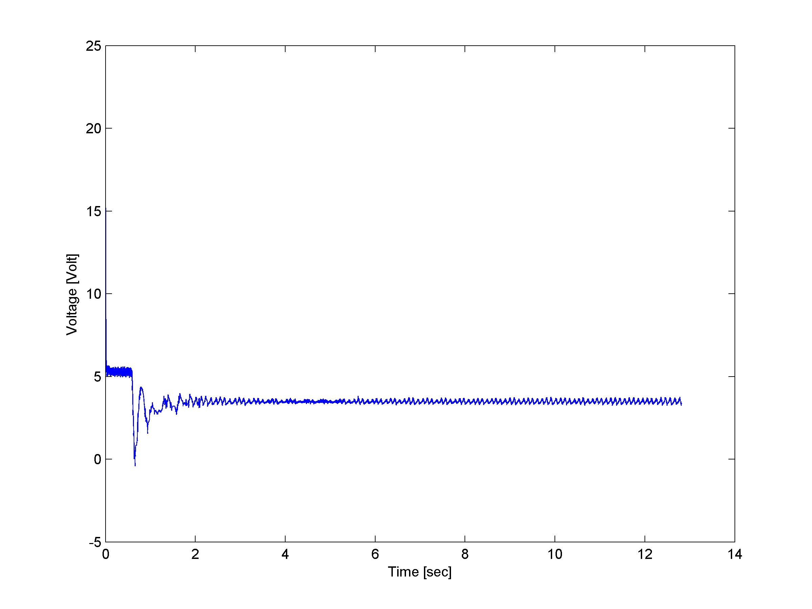

Controls Laboratory
(AA448 Control Systems Sensors and Actuators)
(AA448 Control Systems Sensors and Actuators)
January 2015-March 2015
Overview
This was a quarter long class in which I conducted some fascinating experiments using different kinds of controllers. According to the course description, students study control systems components and formulation of their mathematical models. The course includes analysis of hardware such as amplifiers, DC servomotors, magnetic-actuators, accelerometers, potentiometers, shaft encoders and resolvers, proximity sensors, and force transducers.
Levitation of the Metallic Balls
In this project, as a group, we tried to levitate the metallic balls using an electromagnet. The voltage applied to the electromagnet was controlled by the PID controller and full state controller we developed based on the position senor implemented.
Using PID Controller
|  |  |
| Position of the Ball | Voltage Applied |
|---|
The ball was successfully levitated and the video shows two metallic balls floating in the air.
Food Deliverer
This was the final project for the course. We created a "food deliverer" using DC motor with an arm attached to it. We calculated the trajectory of the food with Newton's law of motion, determined the speed required to deliver the food at a certain distance away from the catapult, and implemented the PID controller to satisfy the performance and safety requirements. I was mainly responsible for designing the controller to achieve the desired velocity at an angle of 45 degrees from horizontal and to stop the motor before the arm hits the motor.